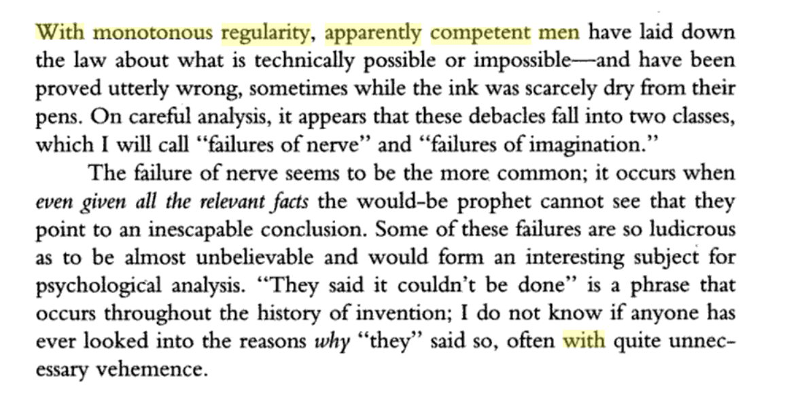

13. Thinking for Yourself
October 28, 2018
In which I define genuine independent thinking as consistently reaching conclusions that are different, surprising, and significant — using an extended driving metaphor where nerve, not intelligence, is what lets you overtake on the straights rather than just follow the turns.
In practice “thinking for yourself” =
Being redpilled: Leaving large, loose tribe for small, tight one (60%)
Ignorance-veiling: Maintaining composure and 50-50 bothsides priors about everything (30%)
“Critical thinking” Ritual, absence-of-evidence skepticism (9%)
Real (1%)
Being redpilled: Leaving large, loose tribe for small, tight one (60%)
Ignorance-veiling: Maintaining composure and 50-50 bothsides priors about everything (30%)
“Critical thinking” Ritual, absence-of-evidence skepticism (9%)
Real (1%)
Children, clueless adults, and foreigners sometimes reach different+surprising conclusions, but rarely significant ones. It takes an independent thinking adult to hit the different+surprising+significant trifecta consistently. More often than could happen by chance.
But primary sign you’re thinking for yourself is that you reach conclusions different from everybody else at least some of the time, and that these conclusions are more surprising than offensive to others, and recognized as significant by an unpredictable group of people
Sure, sometimes you independently reach the same conclusions as others. Sure, sometimes you should throw away cached priors and reboot (resurrect) thinking, and sure, sometimes “there is no evidence of that” is the right brake to slam on toxic, hostile speculations...
Analogy: new data is like a change in direction caused by a banked turn in the road. It sort of happens anyway, you may not even need to turn the wheel.
A change in direction caused by thinking for yourself is like an overtake on a straight road. Wheel maneuvering required.
A change in direction caused by thinking for yourself is like an overtake on a straight road. Wheel maneuvering required.
A different, surprising, significant conclusion drawn from the same data as others steers the conversation in a new direction (so do obvious conclusions drawn from new data that you get earlier than others, but that’s being ahead of the curve, not ‘thinking for yourself’)
The primary quality required to do this is not intelligence, or even imagination (though both are needed), but nerve (a word I’ve come to prefer over ‘boldness’ or ‘courage’ thanks to Arthur C. Clarke failure of imagination < failure of nerve principle).

Classic detective novels are great little illustrations of ‘thinking for yourself’ for this reason. Everybody has roughly same dataset same time, everybody is in an unchanging narrative ‘lane’ with unchanging relative position to others in the same lane.
In Christie’s ‘Lord Edgeware Dies’, clueless Hastings thinks the most important question is ‘Who killed Lord Edgeware?’ while Poirot realizes it is ‘Why didn’t he get the letter mailed by Lady Edgeware?’ The one fact that makes no sense but is filtered out as trivial by others
The key effect of nerve on thinking is that it allows you to see supposedly ‘important’ things as unimportant, and supposedly ‘trivial’ things as crucial. This is why you can get somewhere different despite having the same data. You’re filtering differently.
The road surface has a “grain” of small irregularities (raw data) in every direction. Steering is changing narrative lanes by choosing how to filter the grain with rolling tires. Curve-fitting the car’s path to the road surface by working the friction with rolling rubber.
What actually steers the car is changing how friction with the road interacts with the movement of the car. The steering mechanism reorients wheel to redirect friction so that the sideways friction becomes active. This is like paying more attention in a new direction.
Think about how steering versus staying in your lane works on a straight road. In both cases friction is what allows forward movement, but also produces constant small sideways forces. Going straight = using physics to passively stay pointed ahead.
If Poirot doesn’t do some overtaking, the cops in the faster narrative lane will get to the end first, winning the race with the wrong person hanged. Because they’re simply moving faster with their narrative, not because they have better data. How does Poirot change the ending?
Everybody can see the visible road (known data) but minimizes thinking by staying in their narrative lanes, following local social proof leaders who got their roles by their last bit of thinking for themselves. Upcoming turns (new data) are seen by narrative-leaders first.
Thinking for yourself is paying relatively more attention to road than to other cars for overtakes. Bigger irregularities are like counterexamples. Everybody goes around left around the pothole, you go right and gain, and so people behind you go right too. Hey you’re leader now!
If you think of driving straight on a rough uneven road, the role of known data, importance filtering, staying in narrative lanes, looking more moves ahead, choosing whether to go with a particular uniform flow (social proof) or overtake (think for yourself), all become clearer.
In the analogy this means paying relatively more attention to the road than to other cars, compared to other cars. You also have to pay attention to other narratives besides the one you’re flowing with right now because you’re going to weave among them.
But waiting for these turns is a reactive thing. You can only respond to opportunities, not create them. People who can really think for themselves don’t need to wait for the turns. They can overtake on the straights too. Bonus: This also gets them first shot at turn overtakes!
“Seeking alpha” by being “ahead of the curve” is like overtaking on the turns. The opportunities to do that depend on the macrostructure of the road. Election results, quarterly earnings, results of key upcoming science experiments: these are overtake-on-the-turn opportunities.
You turn into a leader attracting converts from existing narratives, and craft a new one that treats the existing narratives as the terrain. You don’t fit their ideas of ‘lanes’ (tribal partisanship paths) because you are laying dynamic new ‘weaving’ lanes at the next level.
To get back from the analogy to the conceptual point: thinking for yourself means consistently surprising people with new angles, whether or not there is new data to work with, to the point that others start following you.
The faster you go, the more other cars turn into the territory. They’re just a higher-order kind of road friction to use in fitting your path. Imagination helps you see at this higher-level, as others’ narratives turn into your background.
If you do it well enough, for long enough, other cars will start following you, and at some point you’ll be leading a faster dynamic narrative weaving among the slower static stay-in-lane ones, slowly gaining a net speed advantage.
So to think for yourself, you need intelligence yes, imagination, yes, but mainly you need nerve. And if it works, the willingness to lead. At least for a while.